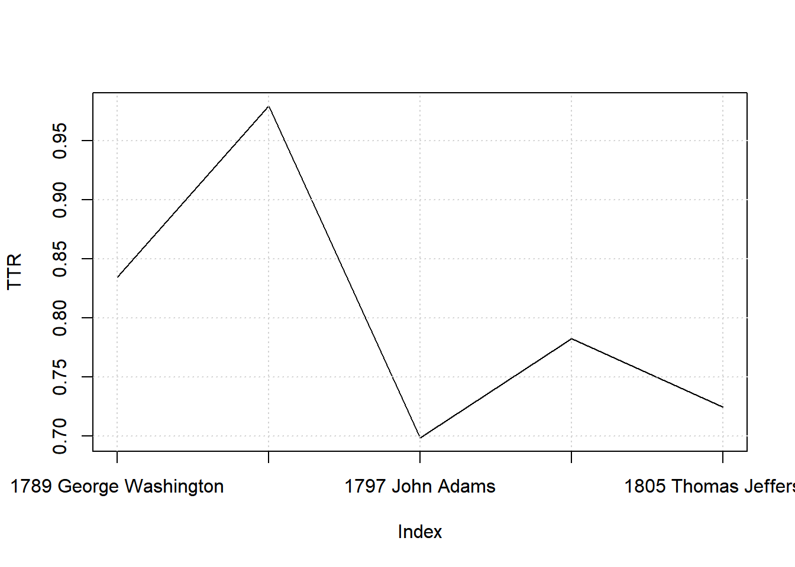
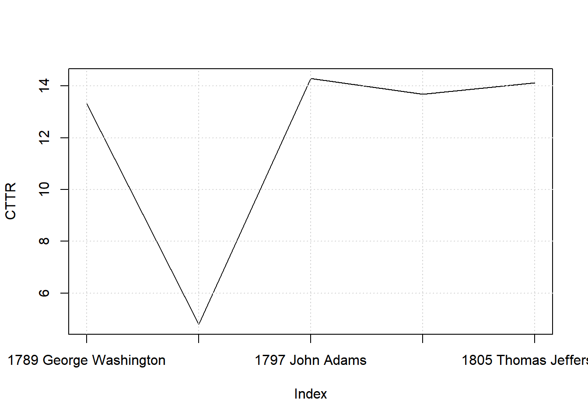
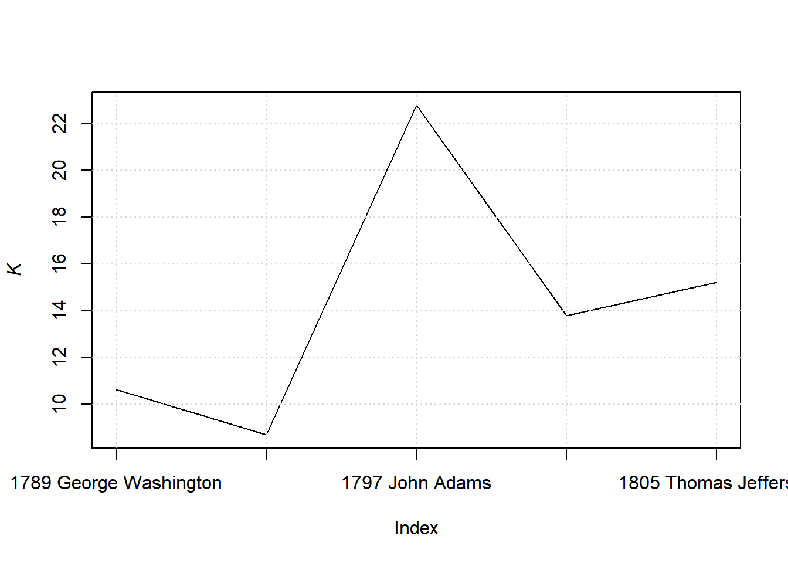
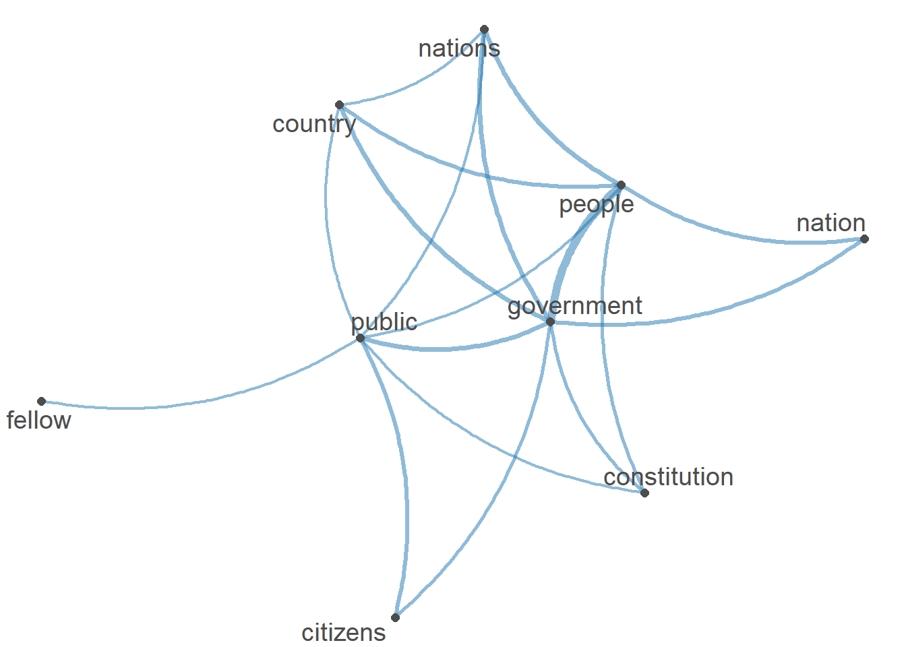

8.5 Inaugural Corpus USA
8.5.2 Create a corpus
## Corpus consisting of 5 documents and 3 docvars.
## text1 :
## "Fellow-Citizens of the Senate and of the House of Representa..."
##
## text2 :
## "Fellow citizens, I am again called upon by the voice of my c..."
##
## text3 :
## "When it was first perceived, in early times, that no middle ..."
##
## text4 :
## "Friends and Fellow Citizens: Called upon to undertake the du..."
##
## text5 :
## "Proceeding, fellow citizens, to that qualification which the..."8.5.2.1 Summary
## Corpus consisting of 5 documents, showing 5 documents:
##
## Text Types Tokens Sentences Year President FirstName
## text1 625 1538 23 1789 Washington George
## text2 96 147 4 1793 Washington George
## text3 826 2578 37 1797 Adams John
## text4 717 1927 41 1801 Jefferson Thomas
## text5 804 2381 45 1805 Jefferson Thomas8.5.2.2 Editing docnames
docid <- paste(dat_inaug$Year,
dat_inaug$FirstName,
dat_inaug$President, sep = " ")
docnames(dat_inaug_corpus) <- docid
print(dat_inaug_corpus)## Corpus consisting of 5 documents and 3 docvars.
## 1789 George Washington :
## "Fellow-Citizens of the Senate and of the House of Representa..."
##
## 1793 George Washington :
## "Fellow citizens, I am again called upon by the voice of my c..."
##
## 1797 John Adams :
## "When it was first perceived, in early times, that no middle ..."
##
## 1801 Thomas Jefferson :
## "Friends and Fellow Citizens: Called upon to undertake the du..."
##
## 1805 Thomas Jefferson :
## "Proceeding, fellow citizens, to that qualification which the..."8.5.2.3 Accessing parts of corpus
## [1] "Fellow-Citizens of the Senate and of the House of Representatives:\n\nAmong the vicissitudes incident to life no event could have filled me with greater anxieties than that of which the notification was transmitted by your order, and received on the 14th day of the present month. On the one hand, I was summoned by my Country, whose voice I can never hear but with veneration and love, from a retreat which I had chosen with the fondest predilection, and, in my flattering hopes, with an immutable decision, as the asylum of my declining years -- a retreat which was rendered every day more necessary as well as more dear to me by the addition of habit to inclination, and of frequent interruptions in my health to the gradual waste committed on it by time. On the other hand, the magnitude and difficulty of the trust to which the voice of my country called me, being sufficient to awaken in the wisest and most experienced of her citizens a distrustful scrutiny into his qualifications, could not but overwhelm with despondence one who (inheriting inferior endowments from nature and unpracticed in the duties of civil administration) ought to be peculiarly conscious of his own deficiencies. In this conflict of emotions all I dare aver is that it has been my faithful study to collect my duty from a just appreciation of every circumstance by which it might be affected. All I dare hope is that if, in executing this task, I have been too much swayed by a grateful remembrance of former instances, or by an affectionate sensibility to this transcendent proof of the confidence of my fellow citizens, and have thence too little consulted my incapacity as well as disinclination for the weighty and untried cares before me, my error will be palliated by the motives which mislead me, and its consequences be judged by my country with some share of the partiality in which they originated.\n\nSuch being the impressions under which I have, in obedience to the public summons, repaired to the present station, it would be peculiarly improper to omit in this first official act my fervent supplications to that Almighty Being who rules over the universe, who presides in the councils of nations, and whose providential aids can supply every human defect, that His benediction may consecrate to the liberties and happiness of the people of the United States a Government instituted by themselves for these essential purposes, and may enable every instrument employed in its administration to execute with success the functions allotted to his charge. In tendering this homage to the Great Author of every public and private good, I assure myself that it expresses your sentiments not less than my own, nor those of my fellow citizens at large less than either. No people can be bound to acknowledge and adore the Invisible Hand which conducts the affairs of men more than those of the United States. Every step by which they have advanced to the character of an independent nation seems to have been distinguished by some token of providential agency; and in the important revolution just accomplished in the system of their united government the tranquil deliberations and voluntary consent of so many distinct communities from which the event has resulted can not be compared with the means by which most governments have been established without some return of pious gratitude, along with an humble anticipation of the future blessings which the past seem to presage. These reflections, arising out of the present crisis, have forced themselves too strongly on my mind to be suppressed. You will join with me, I trust, in thinking that there are none under the influence of which the proceedings of a new and free government can more auspiciously commence.\n\nBy the article establishing the executive department it is made the duty of the President \"to recommend to your consideration such measures as he shall judge necessary and expedient.\" The circumstances under which I now meet you will acquit me from entering into that subject further than to refer to the great constitutional charter under which you are assembled, and which, in defining your powers, designates the objects to which your attention is to be given. It will be more consistent with those circumstances, and far more congenial with the feelings which actuate me, to substitute, in place of a recommendation of particular measures, the tribute that is due to the talents, the rectitude, and the patriotism which adorn the characters selected to devise and adopt them. In these honorable qualifications I behold the surest pledges that as on one side no local prejudices or attachments, no separate views nor party animosities, will misdirect the comprehensive and equal eye which ought to watch over this great assemblage of communities and interests, so, on another, that the foundation of our national policy will be laid in the pure and immutable principles of private morality, and the preeminence of free government be exemplified by all the attributes which can win the affections of its citizens and command the respect of the world. I dwell on this prospect with every satisfaction which an ardent love for my country can inspire, since there is no truth more thoroughly established than that there exists in the economy and course of nature an indissoluble union between virtue and happiness; between duty and advantage; between the genuine maxims of an honest and magnanimous policy and the solid rewards of public prosperity and felicity; since we ought to be no less persuaded that the propitious smiles of Heaven can never be expected on a nation that disregards the eternal rules of order and right which Heaven itself has ordained; and since the preservation of the sacred fire of liberty and the destiny of the republican model of government are justly considered, perhaps, as deeply, as finally, staked on the experiment entrusted to the hands of the American people.\n\nBesides the ordinary objects submitted to your care, it will remain with your judgment to decide how far an exercise of the occasional power delegated by the fifth article of the Constitution is rendered expedient at the present juncture by the nature of objections which have been urged against the system, or by the degree of inquietude which has given birth to them. Instead of undertaking particular recommendations on this subject, in which I could be guided by no lights derived from official opportunities, I shall again give way to my entire confidence in your discernment and pursuit of the public good; for I assure myself that whilst you carefully avoid every alteration which might endanger the benefits of an united and effective government, or which ought to await the future lessons of experience, a reverence for the characteristic rights of freemen and a regard for the public harmony will sufficiently influence your deliberations on the question how far the former can be impregnably fortified or the latter be safely and advantageously promoted.\n\nTo the foregoing observations I have one to add, which will be most properly addressed to the House of Representatives. It concerns myself, and will therefore be as brief as possible. When I was first honored with a call into the service of my country, then on the eve of an arduous struggle for its liberties, the light in which I contemplated my duty required that I should renounce every pecuniary compensation. From this resolution I have in no instance departed; and being still under the impressions which produced it, I must decline as inapplicable to myself any share in the personal emoluments which may be indispensably included in a permanent provision for the executive department, and must accordingly pray that the pecuniary estimates for the station in which I am placed may during my continuance in it be limited to such actual expenditures as the public good may be thought to require.\n\nHaving thus imparted to you my sentiments as they have been awakened by the occasion which brings us together, I shall take my present leave; but not without resorting once more to the benign Parent of the Human Race in humble supplication that, since He has been pleased to favor the American people with opportunities for deliberating in perfect tranquillity, and dispositions for deciding with unparalleled unanimity on a form of government for the security of their union and the advancement of their happiness, so His divine blessing may be equally conspicuous in the enlarged views, the temperate consultations, and the wise measures on which the success of this Government must depend. "## [1] "Fellow-Citizens of the Senate and of the House of Representatives:\n\nAmong the vicissitudes incident to life no event could have filled me with greater anxieties than that of which the notification was transmitted by your order, and received on the 14th day of the present month. On the one hand, I was summoned by my Country, whose voice I can never hear but with veneration and love, from a retreat which I had chosen with the fondest predilection, and, in my flattering hopes, with an immutable decision, as the asylum of my declining years -- a retreat which was rendered every day more necessary as well as more dear to me by the addition of habit to inclination, and of frequent interruptions in my health to the gradual waste committed on it by time. On the other hand, the magnitude and difficulty of the trust to which the voice of my country called me, being sufficient to awaken in the wisest and most experienced of her citizens a distrustful scrutiny into his qualifications, could not but overwhelm with despondence one who (inheriting inferior endowments from nature and unpracticed in the duties of civil administration) ought to be peculiarly conscious of his own deficiencies. In this conflict of emotions all I dare aver is that it has been my faithful study to collect my duty from a just appreciation of every circumstance by which it might be affected. All I dare hope is that if, in executing this task, I have been too much swayed by a grateful remembrance of former instances, or by an affectionate sensibility to this transcendent proof of the confidence of my fellow citizens, and have thence too little consulted my incapacity as well as disinclination for the weighty and untried cares before me, my error will be palliated by the motives which mislead me, and its consequences be judged by my country with some share of the partiality in which they originated.\n\nSuch being the impressions under which I have, in obedience to the public summons, repaired to the present station, it would be peculiarly improper to omit in this first official act my fervent supplications to that Almighty Being who rules over the universe, who presides in the councils of nations, and whose providential aids can supply every human defect, that His benediction may consecrate to the liberties and happiness of the people of the United States a Government instituted by themselves for these essential purposes, and may enable every instrument employed in its administration to execute with success the functions allotted to his charge. In tendering this homage to the Great Author of every public and private good, I assure myself that it expresses your sentiments not less than my own, nor those of my fellow citizens at large less than either. No people can be bound to acknowledge and adore the Invisible Hand which conducts the affairs of men more than those of the United States. Every step by which they have advanced to the character of an independent nation seems to have been distinguished by some token of providential agency; and in the important revolution just accomplished in the system of their united government the tranquil deliberations and voluntary consent of so many distinct communities from which the event has resulted can not be compared with the means by which most governments have been established without some return of pious gratitude, along with an humble anticipation of the future blessings which the past seem to presage. These reflections, arising out of the present crisis, have forced themselves too strongly on my mind to be suppressed. You will join with me, I trust, in thinking that there are none under the influence of which the proceedings of a new and free government can more auspiciously commence.\n\nBy the article establishing the executive department it is made the duty of the President \"to recommend to your consideration such measures as he shall judge necessary and expedient.\" The circumstances under which I now meet you will acquit me from entering into that subject further than to refer to the great constitutional charter under which you are assembled, and which, in defining your powers, designates the objects to which your attention is to be given. It will be more consistent with those circumstances, and far more congenial with the feelings which actuate me, to substitute, in place of a recommendation of particular measures, the tribute that is due to the talents, the rectitude, and the patriotism which adorn the characters selected to devise and adopt them. In these honorable qualifications I behold the surest pledges that as on one side no local prejudices or attachments, no separate views nor party animosities, will misdirect the comprehensive and equal eye which ought to watch over this great assemblage of communities and interests, so, on another, that the foundation of our national policy will be laid in the pure and immutable principles of private morality, and the preeminence of free government be exemplified by all the attributes which can win the affections of its citizens and command the respect of the world. I dwell on this prospect with every satisfaction which an ardent love for my country can inspire, since there is no truth more thoroughly established than that there exists in the economy and course of nature an indissoluble union between virtue and happiness; between duty and advantage; between the genuine maxims of an honest and magnanimous policy and the solid rewards of public prosperity and felicity; since we ought to be no less persuaded that the propitious smiles of Heaven can never be expected on a nation that disregards the eternal rules of order and right which Heaven itself has ordained; and since the preservation of the sacred fire of liberty and the destiny of the republican model of government are justly considered, perhaps, as deeply, as finally, staked on the experiment entrusted to the hands of the American people.\n\nBesides the ordinary objects submitted to your care, it will remain with your judgment to decide how far an exercise of the occasional power delegated by the fifth article of the Constitution is rendered expedient at the present juncture by the nature of objections which have been urged against the system, or by the degree of inquietude which has given birth to them. Instead of undertaking particular recommendations on this subject, in which I could be guided by no lights derived from official opportunities, I shall again give way to my entire confidence in your discernment and pursuit of the public good; for I assure myself that whilst you carefully avoid every alteration which might endanger the benefits of an united and effective government, or which ought to await the future lessons of experience, a reverence for the characteristic rights of freemen and a regard for the public harmony will sufficiently influence your deliberations on the question how far the former can be impregnably fortified or the latter be safely and advantageously promoted.\n\nTo the foregoing observations I have one to add, which will be most properly addressed to the House of Representatives. It concerns myself, and will therefore be as brief as possible. When I was first honored with a call into the service of my country, then on the eve of an arduous struggle for its liberties, the light in which I contemplated my duty required that I should renounce every pecuniary compensation. From this resolution I have in no instance departed; and being still under the impressions which produced it, I must decline as inapplicable to myself any share in the personal emoluments which may be indispensably included in a permanent provision for the executive department, and must accordingly pray that the pecuniary estimates for the station in which I am placed may during my continuance in it be limited to such actual expenditures as the public good may be thought to require.\n\nHaving thus imparted to you my sentiments as they have been awakened by the occasion which brings us together, I shall take my present leave; but not without resorting once more to the benign Parent of the Human Race in humble supplication that, since He has been pleased to favor the American people with opportunities for deliberating in perfect tranquillity, and dispositions for deciding with unparalleled unanimity on a form of government for the security of their union and the advancement of their happiness, so His divine blessing may be equally conspicuous in the enlarged views, the temperate consultations, and the wise measures on which the success of this Government must depend. "8.5.3 Tokens
tokens() segments texts in a corpus into tokens (words or sentences) by word boundaries.
We can remove punctuations or not
8.5.3.1 With punctuations
## Tokens consisting of 5 documents and 3 docvars.
## 1789 George Washington :
## [1] "Fellow-Citizens" "of" "the" "Senate"
## [5] "and" "of" "the" "House"
## [9] "of" "Representatives" ":" "Among"
## [ ... and 1,526 more ]
##
## 1793 George Washington :
## [1] "Fellow" "citizens" "," "I" "am" "again"
## [7] "called" "upon" "by" "the" "voice" "of"
## [ ... and 135 more ]
##
## 1797 John Adams :
## [1] "When" "it" "was" "first" "perceived" ","
## [7] "in" "early" "times" "," "that" "no"
## [ ... and 2,566 more ]
##
## 1801 Thomas Jefferson :
## [1] "Friends" "and" "Fellow" "Citizens" ":" "Called"
## [7] "upon" "to" "undertake" "the" "duties" "of"
## [ ... and 1,915 more ]
##
## 1805 Thomas Jefferson :
## [1] "Proceeding" "," "fellow" "citizens"
## [5] "," "to" "that" "qualification"
## [9] "which" "the" "Constitution" "requires"
## [ ... and 2,369 more ]8.5.3.2 Without punctuations
dat_inaug_corpus_tok_no_punct <- tokens(dat_inaug_corpus, remove_punct = TRUE)
dat_inaug_corpus_tok_no_punct## Tokens consisting of 5 documents and 3 docvars.
## 1789 George Washington :
## [1] "Fellow-Citizens" "of" "the" "Senate"
## [5] "and" "of" "the" "House"
## [9] "of" "Representatives" "Among" "the"
## [ ... and 1,418 more ]
##
## 1793 George Washington :
## [1] "Fellow" "citizens" "I" "am" "again" "called"
## [7] "upon" "by" "the" "voice" "of" "my"
## [ ... and 123 more ]
##
## 1797 John Adams :
## [1] "When" "it" "was" "first" "perceived" "in"
## [7] "early" "times" "that" "no" "middle" "course"
## [ ... and 2,306 more ]
##
## 1801 Thomas Jefferson :
## [1] "Friends" "and" "Fellow" "Citizens" "Called" "upon"
## [7] "to" "undertake" "the" "duties" "of" "the"
## [ ... and 1,714 more ]
##
## 1805 Thomas Jefferson :
## [1] "Proceeding" "fellow" "citizens" "to"
## [5] "that" "qualification" "which" "the"
## [9] "Constitution" "requires" "before" "my"
## [ ... and 2,154 more ]8.5.4 Stop words
It is best to remove stop words (function/grammatical words) when we use statistical analyses of a corpus.
dat_inaug_corpus_tok_no_punct_no_Stop <- tokens_select(dat_inaug_corpus_tok_no_punct, pattern = stopwords("en", source = "stopwords-iso"), selection = "remove")
dat_inaug_corpus_tok_no_punct_no_Stop## Tokens consisting of 5 documents and 3 docvars.
## 1789 George Washington :
## [1] "Fellow-Citizens" "Senate" "House" "Representatives"
## [5] "vicissitudes" "incident" "life" "event"
## [9] "filled" "anxieties" "notification" "transmitted"
## [ ... and 496 more ]
##
## 1793 George Washington :
## [1] "Fellow" "citizens" "called" "voice" "country"
## [6] "execute" "functions" "Chief" "Magistrate" "occasion"
## [11] "proper" "arrive"
## [ ... and 36 more ]
##
## 1797 John Adams :
## [1] "perceived" "times" "middle" "America" "remained"
## [6] "unlimited" "submission" "foreign" "legislature" "total"
## [11] "independence" "claims"
## [ ... and 824 more ]
##
## 1801 Thomas Jefferson :
## [1] "Friends" "Fellow" "Citizens" "Called" "undertake" "duties"
## [7] "executive" "office" "country" "avail" "presence" "portion"
## [ ... and 599 more ]
##
## 1805 Thomas Jefferson :
## [1] "Proceeding" "fellow" "citizens" "qualification"
## [5] "Constitution" "requires" "entrance" "charge"
## [9] "conferred" "duty" "express" "deep"
## [ ... and 747 more ]8.5.5 Statistical analyses
We can start by providing statistics (whether descriptives or inferential) based on our corpora.
8.5.5.1 Simple frequency analysis
Here we look at obtaining a simple frequency analysis of usage.
8.5.5.1.1 DFM
We start by generating a DFM (document-feature matrix)
dat_inaug_corpus_tok_no_punct_no_Stop_dfm <- dfm(dat_inaug_corpus_tok_no_punct_no_Stop)
dat_inaug_corpus_tok_no_punct_no_Stop_dfm## Document-feature matrix of: 5 documents, 1,580 features (73.63% sparse) and 3 docvars.
## features
## docs fellow-citizens senate house representatives
## 1789 George Washington 1 1 2 2
## 1793 George Washington 0 0 0 0
## 1797 John Adams 3 1 0 2
## 1801 Thomas Jefferson 2 0 0 0
## 1805 Thomas Jefferson 0 0 0 0
## features
## docs vicissitudes incident life event filled anxieties
## 1789 George Washington 1 1 1 2 1 1
## 1793 George Washington 0 0 0 0 0 0
## 1797 John Adams 0 0 2 0 0 0
## 1801 Thomas Jefferson 0 0 1 0 0 0
## 1805 Thomas Jefferson 0 0 2 0 0 0
## [ reached max_nfeat ... 1,570 more features ]8.5.5.1.2 Frequencies
dat_inaug_corpus_tok_no_punct_no_Stop_dfm_freq <- textstat_frequency(dat_inaug_corpus_tok_no_punct_no_Stop_dfm)
dat_inaug_corpus_tok_no_punct_no_Stop_dfm_freq## feature frequency rank docfreq group
## 1 government 40 1 5 all
## 2 public 30 2 4 all
## 3 people 27 3 4 all
## 4 country 22 4 5 all
## 5 citizens 22 4 5 all
## 6 nations 18 6 4 all
## 7 constitution 18 6 5 all
## 8 fellow 16 8 4 all
## 9 nation 15 9 4 all
## 10 peace 14 10 3 all
## 11 power 13 11 4 all
## 12 happiness 12 12 4 all
## 13 foreign 12 12 2 all
## 14 mind 11 14 4 all
## 15 justice 11 14 3 all
## 16 love 10 16 4 all
## 17 duty 10 16 3 all
## 18 measures 10 16 4 all
## 19 liberty 10 16 4 all
## 20 honor 10 16 3 all
## 21 administration 9 21 5 all
## 22 confidence 9 21 5 all
## 23 united 9 21 4 all
## 24 equal 9 21 4 all
## 25 principles 9 21 4 all
## 26 union 9 21 4 all
## 27 support 9 21 3 all
## 28 time 8 28 3 all
## 29 duties 8 28 4 all
## 30 principle 8 28 3 all
## 31 spirit 8 28 2 all
## 32 opinion 8 28 3 all
## 33 called 7 33 4 all
## 34 truth 7 33 4 all
## 35 rights 7 33 4 all
## 36 sense 7 33 4 all
## 37 safety 7 33 2 all
## 38 law 7 33 2 all
## 39 reason 7 33 2 all
## 40 fellow-citizens 6 40 3 all
## 41 life 6 40 4 all
## 42 nature 6 40 3 all
## 43 human 6 40 3 all
## 44 future 6 40 4 all
## 45 influence 6 40 3 all
## 46 executive 6 40 4 all
## 47 honest 6 40 3 all
## 48 experiment 6 40 4 all
## 49 american 6 40 3 all
## 50 occasion 6 40 4 all
## 51 form 6 40 3 all
## 52 america 6 40 2 all
## 53 congress 6 40 1 all
## 54 commerce 6 40 2 all
## 55 freedom 6 40 2 all
## 56 day 5 56 4 all
## 57 voice 5 56 4 all
## 58 station 5 56 4 all
## 59 enable 5 56 4 all
## 60 affairs 5 56 3 all
## 61 objects 5 56 4 all
## 62 party 5 56 2 all
## 63 national 5 56 2 all
## 64 republican 5 56 3 all
## 65 harmony 5 56 3 all
## 66 favor 5 56 3 all
## 67 zeal 5 56 3 all
## 68 war 5 56 3 all
## 69 history 5 56 3 all
## 70 faith 5 56 2 all
## 71 laws 5 56 2 all
## 72 knowledge 5 56 2 all
## 73 choice 5 56 2 all
## 74 abuses 5 56 3 all
## 75 political 5 56 3 all
## 76 religion 5 56 3 all
## 77 friendship 5 56 3 all
## 78 industry 5 56 2 all
## 79 religious 5 56 2 all
## 80 press 5 56 2 all
## 81 limits 5 56 1 all
## 82 false 5 56 1 all
## 83 representatives 4 83 2 all
## 84 trust 4 83 2 all
## 85 rules 4 83 2 all
## 86 success 4 83 2 all
## 87 functions 4 83 4 all
## 88 private 4 83 2 all
## 89 character 4 83 4 all
## 90 governments 4 83 3 all
## 91 gratitude 4 83 3 all
## 92 humble 4 83 3 all
## 93 subject 4 83 3 all
## 94 powers 4 83 4 all
## 95 selected 4 83 4 all
## 96 virtue 4 83 3 all
## 97 prosperity 4 83 3 all
## 98 preservation 4 83 3 all
## 99 judgment 4 83 3 all
## 100 exercise 4 83 3 all
## 101 experience 4 83 3 all
## 102 service 4 83 3 all
## 103 resolution 4 83 2 all
## 104 personal 4 83 3 all
## 105 express 4 83 4 all
## 106 presence 4 83 3 all
## 107 forms 4 83 2 all
## 108 providence 4 83 3 all
## 109 authority 4 83 2 all
## 110 produce 4 83 2 all
## 111 domestic 4 83 3 all
## 112 common 4 83 2 all
## 113 suffrage 4 83 3 all
## 114 feel 4 83 3 all
## 115 pleasing 4 83 1 all
## 116 virtuous 4 83 1 all
## 117 opinions 4 83 3 all
## 118 maintain 4 83 2 all
## 119 desire 4 83 2 all
## 120 land 4 83 2 all
## 121 wisdom 4 83 2 all
## 122 left 4 83 2 all
## 123 fear 4 83 2 all
## 124 trusted 4 83 2 all
## 125 hand 3 125 1 all
## 126 veneration 3 125 2 all
## 127 committed 3 125 3 all
## 128 sufficient 3 125 3 all
## 129 civil 3 125 3 all
## 130 faithful 3 125 3 all
## 131 hope 3 125 3 all
## 132 proof 3 125 3 all
## 133 error 3 125 2 all
## 134 official 3 125 2 all
## 135 councils 3 125 3 all
## 136 liberties 3 125 2 all
## 137 essential 3 125 3 all
## 138 execute 3 125 3 all
## 139 charge 3 125 3 all
## 140 independent 3 125 3 all
## 141 revolution 3 125 2 all
## 142 deliberations 3 125 2 all
## 143 established 3 125 2 all
## 144 return 3 125 2 all
## 145 blessings 3 125 3 all
## 146 crisis 3 125 3 all
## 147 article 3 125 2 all
## 148 consideration 3 125 2 all
## 149 expedient 3 125 2 all
## 150 circumstances 3 125 2 all
## 151 meet 3 125 3 all
## 152 constitutional 3 125 3 all
## 153 attention 3 125 2 all
## 154 patriotism 3 125 3 all
## 155 adopt 3 125 3 all
## 156 views 3 125 2 all
## 157 satisfaction 3 125 2 all
## 158 ardent 3 125 3 all
## 159 sacred 3 125 2 all
## 160 considered 3 125 3 all
## 161 deeply 3 125 3 all
## 162 remain 3 125 3 all
## 163 degree 3 125 2 all
## 164 recommendations 3 125 2 all
## 165 reverence 3 125 3 all
## 166 regard 3 125 2 all
## 167 add 3 125 3 all
## 168 benign 3 125 3 all
## 169 tranquillity 3 125 3 all
## 170 blessing 3 125 3 all
## 171 wise 3 125 3 all
## 172 endeavor 3 125 2 all
## 173 entertain 3 125 3 all
## 174 legislature 3 125 1 all
## 175 independence 3 125 2 all
## 176 danger 3 125 2 all
## 177 purity 3 125 2 all
## 178 integrity 3 125 1 all
## 179 society 3 125 2 all
## 180 difference 3 125 2 all
## 181 individuals 3 125 2 all
## 182 happy 3 125 2 all
## 183 native 3 125 2 all
## 184 approbation 3 125 3 all
## 185 legislatures 3 125 1 all
## 186 friends 3 125 3 all
## 187 attachment 3 125 2 all
## 188 pride 3 125 2 all
## 189 majority 3 125 2 all
## 190 govern 3 125 2 all
## 191 candid 3 125 2 all
## 192 increasing 3 125 2 all
## 193 services 3 125 2 all
## 194 houses 3 125 1 all
## 195 humanity 3 125 2 all
## 196 agriculture 3 125 3 all
## 197 friendly 3 125 2 all
## 198 lay 3 125 2 all
## 199 resources 3 125 3 all
## 200 destinies 3 125 2 all
## 201 moral 3 125 2 all
## 202 authorities 3 125 2 all
## 203 intercourse 3 125 2 all
## 204 brethren 3 125 2 all
## 205 change 3 125 2 all
## 206 faculties 3 125 2 all
## 207 improvement 3 125 2 all
## 208 debts 3 125 2 all
## 209 errors 3 125 2 all
## 210 advance 3 125 2 all
## 211 expenses 3 125 1 all
## 212 collected 3 125 1 all
## 213 revenue 3 125 1 all
## 214 comforts 3 125 1 all
## 215 arts 3 125 1 all
## 216 whatsoever 3 125 1 all
## 217 senate 2 217 2 all
## 218 house 2 217 1 all
## 219 event 2 217 1 all
## 220 retreat 2 217 1 all
## 221 chosen 2 217 2 all
## 222 hopes 2 217 2 all
## 223 immutable 2 217 1 all
## 224 decision 2 217 2 all
## 225 rendered 2 217 1 all
## 226 habit 2 217 2 all
## 227 inclination 2 217 2 all
## 228 magnitude 2 217 2 all
## 229 experienced 2 217 2 all
## 230 qualifications 2 217 1 all
## 231 peculiarly 2 217 1 all
## 232 conscious 2 217 2 all
## 233 task 2 217 2 all
## 234 grateful 2 217 2 all
## 235 transcendent 2 217 2 all
## 236 motives 2 217 2 all
## 237 consequences 2 217 2 all
## 238 share 2 217 1 all
## 239 impressions 2 217 1 all
## 240 obedience 2 217 2 all
## 241 supplications 2 217 2 all
## 242 universe 2 217 2 all
## 243 providential 2 217 1 all
## 244 defect 2 217 2 all
## 245 instituted 2 217 2 all
## 246 employed 2 217 2 all
## 247 assure 2 217 1 all
## 248 sentiments 2 217 1 all
## 249 bound 2 217 2 all
## 250 acknowledge 2 217 2 all
## 251 distinguished 2 217 2 all
## 252 voluntary 2 217 2 all
## 253 communities 2 217 1 all
## 254 department 2 217 1 all
## 255 president 2 217 2 all
## 256 assembled 2 217 2 all
## 257 consistent 2 217 2 all
## 258 talents 2 217 2 all
## 259 characters 2 217 2 all
## 260 devise 2 217 2 all
## 261 honorable 2 217 2 all
## 262 surest 2 217 2 all
## 263 local 2 217 2 all
## 264 prejudices 2 217 2 all
## 265 attachments 2 217 2 all
## 266 animosities 2 217 2 all
## 267 eye 2 217 2 all
## 268 policy 2 217 1 all
## 269 laid 2 217 2 all
## 270 command 2 217 2 all
## 271 respect 2 217 2 all
## 272 prospect 2 217 2 all
## 273 inspire 2 217 2 all
## 274 economy 2 217 2 all
## 275 advantage 2 217 2 all
## 276 heaven 2 217 1 all
## 277 expected 2 217 2 all
## 278 ordained 2 217 2 all
## 279 justly 2 217 2 all
## 280 hands 2 217 2 all
## 281 care 2 217 2 all
## 282 birth 2 217 2 all
## 283 undertaking 2 217 2 all
## 284 guided 2 217 2 all
## 285 opportunities 2 217 1 all
## 286 entire 2 217 2 all
## 287 alteration 2 217 2 all
## 288 endanger 2 217 2 all
## 289 question 2 217 2 all
## 290 concerns 2 217 2 all
## 291 pecuniary 2 217 1 all
## 292 instance 2 217 2 all
## 293 decline 2 217 2 all
## 294 permanent 2 217 2 all
## 295 continuance 2 217 2 all
## 296 leave 2 217 2 all
## 297 parent 2 217 2 all
## 298 pleased 2 217 2 all
## 299 perfect 2 217 2 all
## 300 depend 2 217 2 all
## 301 proper 2 217 2 all
## 302 reposed 2 217 2 all
## 303 execution 2 217 2 all
## 304 requires 2 217 2 all
## 305 oath 2 217 1 all
## 306 office 2 217 2 all
## 307 knowingly 2 217 2 all
## 308 punishment 2 217 2 all
## 309 solemn 2 217 2 all
## 310 times 2 217 1 all
## 311 reflection 2 217 1 all
## 312 relying 2 217 2 all
## 313 overruling 2 217 2 all
## 314 ocean 2 217 2 all
## 315 revolutionary 2 217 2 all
## 316 commanded 2 217 1 all
## 317 prepared 2 217 1 all
## 318 reflecting 2 217 2 all
## 319 single 2 217 1 all
## 320 universal 2 217 1 all
## 321 manufactures 2 217 2 all
## 322 fall 2 217 2 all
## 323 partial 2 217 1 all
## 324 establish 2 217 1 all
## 325 defense 2 217 1 all
## 326 secure 2 217 2 all
## 327 discussions 2 217 2 all
## 328 transactions 2 217 2 all
## 329 animated 2 217 1 all
## 330 result 2 217 2 all
## 331 hearts 2 217 1 all
## 332 relations 2 217 2 all
## 333 outlines 2 217 2 all
## 334 rule 2 217 2 all
## 335 posterity 2 217 1 all
## 336 occasions 2 217 2 all
## 337 obligations 2 217 1 all
## 338 expectations 2 217 2 all
## 339 habitual 2 217 1 all
## 340 esteem 2 217 1 all
## 341 ancient 2 217 2 all
## 342 sight 2 217 1 all
## 343 amiable 2 217 1 all
## 344 springs 2 217 1 all
## 345 judgments 2 217 1 all
## 346 enlightened 2 217 2 all
## 347 existence 2 217 2 all
## 348 glory 2 217 1 all
## 349 conviction 2 217 2 all
## 350 benevolence 2 217 1 all
## 351 ideas 2 217 1 all
## 352 fair 2 217 2 all
## 353 election 2 217 2 all
## 354 corruption 2 217 1 all
## 355 intrigue 2 217 1 all
## 356 lot 2 217 2 all
## 357 actions 2 217 2 all
## 358 temperance 2 217 2 all
## 359 conducting 2 217 2 all
## 360 live 2 217 2 all
## 361 mankind 2 217 2 all
## 362 enemies 2 217 1 all
## 363 country's 2 217 2 all
## 364 speak 2 217 2 all
## 365 preference 2 217 1 all
## 366 formed 2 217 1 all
## 367 impartial 2 217 1 all
## 368 determination 2 217 1 all
## 369 wishes 2 217 1 all
## 370 parties 2 217 2 all
## 371 science 2 217 2 all
## 372 encourage 2 217 2 all
## 373 institution 2 217 2 all
## 374 classes 2 217 1 all
## 375 necessity 2 217 2 all
## 376 aboriginal 2 217 2 all
## 377 disposition 2 217 2 all
## 378 condition 2 217 2 all
## 379 chiefly 2 217 2 all
## 380 preserve 2 217 2 all
## 381 internal 2 217 2 all
## 382 sentiment 2 217 2 all
## 383 preserved 2 217 2 all
## 384 pursue 2 217 2 all
## 385 constituents 2 217 2 all
## 386 age 2 217 2 all
## 387 doubt 2 217 2 all
## 388 energy 2 217 2 all
## 389 wide 2 217 1 all
## 390 reach 2 217 1 all
## 391 issue 2 217 1 all
## 392 difficulties 2 217 1 all
## 393 charged 2 217 2 all
## 394 encouragement 2 217 1 all
## 395 strangers 2 217 2 all
## 396 unite 2 217 1 all
## 397 efforts 2 217 2 all
## 398 bear 2 217 1 all
## 399 prevail 2 217 2 all
## 400 affection 2 217 2 all
## 401 intolerance 2 217 1 all
## 402 blood 2 217 1 all
## 403 undisturbed 2 217 2 all
## 404 strong 2 217 1 all
## 405 thousandth 2 217 1 all
## 406 restrain 2 217 2 all
## 407 pursuits 2 217 2 all
## 408 labor 2 217 1 all
## 409 enter 2 217 2 all
## 410 vital 2 217 1 all
## 411 moments 2 217 1 all
## 412 protection 2 217 2 all
## 413 steps 2 217 1 all
## 414 reformation 2 217 2 all
## 415 offices 2 217 2 all
## 416 retire 2 217 1 all
## 417 legal 2 217 2 all
## 418 wrong 2 217 1 all
## 419 view 2 217 2 all
## 420 ground 2 217 2 all
## 421 indulgence 2 217 2 all
## 422 lead 2 217 2 all
## 423 inspires 2 217 1 all
## 424 understanding 2 217 1 all
## 425 witness 2 217 1 all
## 426 enabled 2 217 1 all
## 427 taxes 2 217 1 all
## 428 officers 2 217 1 all
## 429 property 2 217 1 all
## 430 paid 2 217 1 all
## 431 merit 2 217 1 all
## 432 approved 2 217 1 all
## 433 consumption 2 217 1 all
## 434 current 2 217 1 all
## 435 extend 2 217 1 all
## 436 short 2 217 1 all
## 437 redemption 2 217 1 all
## 438 increased 2 217 1 all
## 439 population 2 217 1 all
## 440 directed 2 217 1 all
## 441 habits 2 217 1 all
## 442 morals 2 217 1 all
## 443 covered 2 217 1 all
## 444 enlighten 2 217 1 all
## 445 minds 2 217 1 all
## 446 ignorance 2 217 1 all
## 447 guide 2 217 1 all
## 448 wholesome 2 217 1 all
## 449 licentiousness 2 217 1 all
## 450 lessen 2 217 1 all
## 451 falsehood 2 217 1 all
## 452 defamation 2 217 1 all
## 453 servants 2 217 1 all
## 454 maintained 2 217 1 all
## 455 drawn 2 217 1 all
## 456 strength 2 217 1 all
## 457 vicissitudes 1 457 1 all
## 458 incident 1 457 1 all
## 459 filled 1 457 1 all
## 460 anxieties 1 457 1 all
## 461 notification 1 457 1 all
## 462 transmitted 1 457 1 all
## 463 received 1 457 1 all
## 464 14th 1 457 1 all
## 465 month 1 457 1 all
## 466 summoned 1 457 1 all
## 467 hear 1 457 1 all
## 468 fondest 1 457 1 all
## 469 predilection 1 457 1 all
## 470 flattering 1 457 1 all
## 471 asylum 1 457 1 all
## 472 declining 1 457 1 all
## 473 addition 1 457 1 all
## 474 frequent 1 457 1 all
## 475 interruptions 1 457 1 all
## 476 health 1 457 1 all
## 477 gradual 1 457 1 all
## 478 waste 1 457 1 all
## 479 difficulty 1 457 1 all
## 480 awaken 1 457 1 all
## 481 wisest 1 457 1 all
## 482 distrustful 1 457 1 all
## 483 scrutiny 1 457 1 all
## 484 overwhelm 1 457 1 all
## 485 despondence 1 457 1 all
## 486 inheriting 1 457 1 all
## 487 inferior 1 457 1 all
## 488 endowments 1 457 1 all
## 489 unpracticed 1 457 1 all
## 490 deficiencies 1 457 1 all
## 491 conflict 1 457 1 all
## 492 emotions 1 457 1 all
## 493 aver 1 457 1 all
## 494 study 1 457 1 all
## 495 collect 1 457 1 all
## 496 appreciation 1 457 1 all
## 497 circumstance 1 457 1 all
## 498 executing 1 457 1 all
## 499 swayed 1 457 1 all
## 500 remembrance 1 457 1 all
## 501 instances 1 457 1 all
## 502 affectionate 1 457 1 all
## 503 sensibility 1 457 1 all
## 504 consulted 1 457 1 all
## 505 incapacity 1 457 1 all
## 506 disinclination 1 457 1 all
## 507 weighty 1 457 1 all
## 508 untried 1 457 1 all
## 509 cares 1 457 1 all
## 510 palliated 1 457 1 all
## 511 mislead 1 457 1 all
## 512 judged 1 457 1 all
## 513 partiality 1 457 1 all
## 514 originated 1 457 1 all
## 515 summons 1 457 1 all
## 516 repaired 1 457 1 all
## 517 improper 1 457 1 all
## 518 omit 1 457 1 all
## 519 fervent 1 457 1 all
## 520 almighty 1 457 1 all
## 521 presides 1 457 1 all
## 522 aids 1 457 1 all
## 523 supply 1 457 1 all
## 524 benediction 1 457 1 all
## 525 consecrate 1 457 1 all
## 526 purposes 1 457 1 all
## 527 instrument 1 457 1 all
## 528 allotted 1 457 1 all
## 529 tendering 1 457 1 all
## 530 homage 1 457 1 all
## 531 author 1 457 1 all
## 532 expresses 1 457 1 all
## 533 adore 1 457 1 all
## 534 invisible 1 457 1 all
## 535 conducts 1 457 1 all
## 536 step 1 457 1 all
## 537 advanced 1 457 1 all
## 538 token 1 457 1 all
## 539 agency 1 457 1 all
## 540 accomplished 1 457 1 all
## 541 tranquil 1 457 1 all
## 542 consent 1 457 1 all
## 543 distinct 1 457 1 all
## 544 compared 1 457 1 all
## 545 pious 1 457 1 all
## 546 anticipation 1 457 1 all
## 547 presage 1 457 1 all
## 548 reflections 1 457 1 all
## 549 arising 1 457 1 all
## 550 forced 1 457 1 all
## 551 suppressed 1 457 1 all
## 552 thinking 1 457 1 all
## 553 proceedings 1 457 1 all
## 554 auspiciously 1 457 1 all
## 555 commence 1 457 1 all
## 556 establishing 1 457 1 all
## 557 recommend 1 457 1 all
## 558 judge 1 457 1 all
## 559 acquit 1 457 1 all
## 560 entering 1 457 1 all
## 561 refer 1 457 1 all
## 562 charter 1 457 1 all
## 563 defining 1 457 1 all
## 564 designates 1 457 1 all
## 565 congenial 1 457 1 all
## 566 feelings 1 457 1 all
## 567 actuate 1 457 1 all
## 568 substitute 1 457 1 all
## 569 recommendation 1 457 1 all
## 570 tribute 1 457 1 all
## 571 rectitude 1 457 1 all
## 572 adorn 1 457 1 all
## 573 behold 1 457 1 all
## 574 pledges 1 457 1 all
## 575 separate 1 457 1 all
## 576 misdirect 1 457 1 all
## 577 comprehensive 1 457 1 all
## 578 watch 1 457 1 all
## 579 assemblage 1 457 1 all
## 580 foundation 1 457 1 all
## 581 pure 1 457 1 all
## 582 morality 1 457 1 all
## 583 preeminence 1 457 1 all
## 584 exemplified 1 457 1 all
## 585 attributes 1 457 1 all
## 586 win 1 457 1 all
## 587 affections 1 457 1 all
## 588 dwell 1 457 1 all
## 589 exists 1 457 1 all
## 590 indissoluble 1 457 1 all
## 591 genuine 1 457 1 all
## 592 maxims 1 457 1 all
## 593 magnanimous 1 457 1 all
## 594 solid 1 457 1 all
## 595 rewards 1 457 1 all
## 596 felicity 1 457 1 all
## 597 persuaded 1 457 1 all
## 598 propitious 1 457 1 all
## 599 smiles 1 457 1 all
## 600 disregards 1 457 1 all
## 601 eternal 1 457 1 all
## 602 destiny 1 457 1 all
## 603 model 1 457 1 all
## 604 finally 1 457 1 all
## 605 staked 1 457 1 all
## 606 entrusted 1 457 1 all
## 607 ordinary 1 457 1 all
## 608 submitted 1 457 1 all
## 609 decide 1 457 1 all
## 610 occasional 1 457 1 all
## 611 delegated 1 457 1 all
## 612 juncture 1 457 1 all
## 613 objections 1 457 1 all
## 614 urged 1 457 1 all
## 615 inquietude 1 457 1 all
## 616 lights 1 457 1 all
## 617 derived 1 457 1 all
## 618 discernment 1 457 1 all
## 619 pursuit 1 457 1 all
## 620 carefully 1 457 1 all
## 621 avoid 1 457 1 all
## 622 benefits 1 457 1 all
## 623 effective 1 457 1 all
## 624 await 1 457 1 all
## 625 lessons 1 457 1 all
## 626 characteristic 1 457 1 all
## 627 freemen 1 457 1 all
## 628 impregnably 1 457 1 all
## 629 fortified 1 457 1 all
## 630 safely 1 457 1 all
## 631 advantageously 1 457 1 all
## 632 promoted 1 457 1 all
## 633 foregoing 1 457 1 all
## 634 observations 1 457 1 all
## 635 properly 1 457 1 all
## 636 addressed 1 457 1 all
## 637 honored 1 457 1 all
## 638 eve 1 457 1 all
## 639 arduous 1 457 1 all
## 640 struggle 1 457 1 all
## 641 light 1 457 1 all
## 642 contemplated 1 457 1 all
## 643 required 1 457 1 all
## 644 renounce 1 457 1 all
## 645 compensation 1 457 1 all
## 646 departed 1 457 1 all
## 647 produced 1 457 1 all
## 648 inapplicable 1 457 1 all
## 649 emoluments 1 457 1 all
## 650 indispensably 1 457 1 all
## 651 included 1 457 1 all
## 652 provision 1 457 1 all
## 653 pray 1 457 1 all
## 654 estimates 1 457 1 all
## 655 limited 1 457 1 all
## 656 actual 1 457 1 all
## 657 expenditures 1 457 1 all
## 658 require 1 457 1 all
## 659 imparted 1 457 1 all
## 660 awakened 1 457 1 all
## 661 brings 1 457 1 all
## 662 resorting 1 457 1 all
## 663 race 1 457 1 all
## 664 supplication 1 457 1 all
## 665 deliberating 1 457 1 all
## 666 dispositions 1 457 1 all
## 667 deciding 1 457 1 all
## 668 unparalleled 1 457 1 all
## 669 unanimity 1 457 1 all
## 670 security 1 457 1 all
## 671 advancement 1 457 1 all
## 672 divine 1 457 1 all
## 673 equally 1 457 1 all
## 674 conspicuous 1 457 1 all
## 675 enlarged 1 457 1 all
## 676 temperate 1 457 1 all
## 677 consultations 1 457 1 all
## 678 chief 1 457 1 all
## 679 magistrate 1 457 1 all
## 680 arrive 1 457 1 all
## 681 previous 1 457 1 all
## 682 violated 1 457 1 all
## 683 willingly 1 457 1 all
## 684 injunctions 1 457 1 all
## 685 incurring 1 457 1 all
## 686 upbraidings 1 457 1 all
## 687 witnesses 1 457 1 all
## 688 ceremony 1 457 1 all
## 689 perceived 1 457 1 all
## 690 middle 1 457 1 all
## 691 remained 1 457 1 all
## 692 unlimited 1 457 1 all
## 693 submission 1 457 1 all
## 694 total 1 457 1 all
## 695 claims 1 457 1 all
## 696 apprehensive 1 457 1 all
## 697 formidable 1 457 1 all
## 698 fleets 1 457 1 all
## 699 armies 1 457 1 all
## 700 determine 1 457 1 all
## 701 resist 1 457 1 all
## 702 contests 1 457 1 all
## 703 dissensions 1 457 1 all
## 704 extensive 1 457 1 all
## 705 intentions 1 457 1 all
## 706 intelligence 1 457 1 all
## 707 signally 1 457 1 all
## 708 protected 1 457 1 all
## 709 consisting 1 457 1 all
## 710 broke 1 457 1 all
## 711 pieces 1 457 1 all
## 712 chains 1 457 1 all
## 713 forging 1 457 1 all
## 714 rod 1 457 1 all
## 715 iron 1 457 1 all
## 716 lifted 1 457 1 all
## 717 frankly 1 457 1 all
## 718 cut 1 457 1 all
## 719 asunder 1 457 1 all
## 720 ties 1 457 1 all
## 721 launched 1 457 1 all
## 722 uncertainty 1 457 1 all
## 723 ardor 1 457 1 all
## 724 supplying 1 457 1 all
## 725 temporary 1 457 1 all
## 726 confederation 1 457 1 all
## 727 models 1 457 1 all
## 728 batavian 1 457 1 all
## 729 helvetic 1 457 1 all
## 730 confederacies 1 457 1 all
## 731 examples 1 457 1 all
## 732 precision 1 457 1 all
## 733 striking 1 457 1 all
## 734 particulars 1 457 1 all
## 735 courier 1 457 1 all
## 736 seat 1 457 1 all
## 737 frontier 1 457 1 all
## 738 foreseen 1 457 1 all
## 739 assisted 1 457 1 all
## 740 formation 1 457 1 all
## 741 durable 1 457 1 all
## 742 negligence 1 457 1 all
## 743 regulations 1 457 1 all
## 744 inattention 1 457 1 all
## 745 disobedience 1 457 1 all
## 746 appeared 1 457 1 all
## 747 melancholy 1 457 1 all
## 748 languor 1 457 1 all
## 749 jealousies 1 457 1 all
## 750 rivalries 1 457 1 all
## 751 navigation 1 457 1 all
## 752 discouragement 1 457 1 all
## 753 lands 1 457 1 all
## 754 contempt 1 457 1 all
## 755 loss 1 457 1 all
## 756 credit 1 457 1 all
## 757 discontents 1 457 1 all
## 758 combinations 1 457 1 all
## 759 conventions 1 457 1 all
## 760 insurrection 1 457 1 all
## 761 threatening 1 457 1 all
## 762 calamity 1 457 1 all
## 763 dangerous 1 457 1 all
## 764 abandoned 1 457 1 all
## 765 usual 1 457 1 all
## 766 pursued 1 457 1 all
## 767 concert 1 457 1 all
## 768 plan 1 457 1 all
## 769 insure 1 457 1 all
## 770 provide 1 457 1 all
## 771 promote 1 457 1 all
## 772 welfare 1 457 1 all
## 773 disquisitions 1 457 1 all
## 774 issued 1 457 1 all
## 775 irritated 1 457 1 all
## 776 literary 1 457 1 all
## 777 altercation 1 457 1 all
## 778 debate 1 457 1 all
## 779 heated 1 457 1 all
## 780 animosity 1 457 1 all
## 781 read 1 457 1 all
## 782 heads 1 457 1 all
## 783 prompted 1 457 1 all
## 784 adapted 1 457 1 all
## 785 genius 1 457 1 all
## 786 situation 1 457 1 all
## 787 proposed 1 457 1 all
## 788 suggested 1 457 1 all
## 789 conformable 1 457 1 all
## 790 esteemed 1 457 1 all
## 791 contributed 1 457 1 all
## 792 claiming 1 457 1 all
## 793 adoption 1 457 1 all
## 794 rejection 1 457 1 all
## 795 hesitate 1 457 1 all
## 796 objection 1 457 1 all
## 797 entertained 1 457 1 all
## 798 promoting 1 457 1 all
## 799 ordain 1 457 1 all
## 800 returning 1 457 1 all
## 801 bosom 1 457 1 all
## 802 painful 1 457 1 all
## 803 separation 1 457 1 all
## 804 elected 1 457 1 all
## 805 repeatedly 1 457 1 all
## 806 operation 1 457 1 all
## 807 equaled 1 457 1 all
## 808 sanguine 1 457 1 all
## 809 delight 1 457 1 all
## 810 effects 1 457 1 all
## 811 acquired 1 457 1 all
## 812 deserve 1 457 1 all
## 813 solidity 1 457 1 all
## 814 idea 1 457 1 all
## 815 congregations 1 457 1 all
## 816 cities 1 457 1 all
## 817 superior 1 457 1 all
## 818 intelligences 1 457 1 all
## 819 benevolent 1 457 1 all
## 820 spectacle 1 457 1 all
## 821 noble 1 457 1 all
## 822 majestic 1 457 1 all
## 823 august 1 457 1 all
## 824 assembly 1 457 1 all
## 825 chamber 1 457 1 all
## 826 branches 1 457 1 all
## 827 exercised 1 457 1 all
## 828 regular 1 457 1 all
## 829 periods 1 457 1 all
## 830 neighbors 1 457 1 all
## 831 mere 1 457 1 all
## 832 ornament 1 457 1 all
## 833 decoration 1 457 1 all
## 834 robes 1 457 1 all
## 835 diamonds 1 457 1 all
## 836 respectable 1 457 1 all
## 837 descends 1 457 1 all
## 838 accidents 1 457 1 all
## 839 institutions 1 457 1 all
## 840 remote 1 457 1 all
## 841 antiquity 1 457 1 all
## 842 fresh 1 457 1 all
## 843 represented 1 457 1 all
## 844 majesty 1 457 1 all
## 845 reflected 1 457 1 all
## 846 legitimate 1 457 1 all
## 847 dissemination 1 457 1 all
## 848 body 1 457 1 all
## 849 object 1 457 1 all
## 850 justifiable 1 457 1 all
## 851 excusable 1 457 1 all
## 852 riches 1 457 1 all
## 853 grandeur 1 457 1 all
## 854 innocence 1 457 1 all
## 855 midst 1 457 1 all
## 856 unfaithful 1 457 1 all
## 857 lose 1 457 1 all
## 858 extraneous 1 457 1 all
## 859 infect 1 457 1 all
## 860 elections 1 457 1 all
## 861 determined 1 457 1 all
## 862 vote 1 457 1 all
## 863 procured 1 457 1 all
## 864 artifice 1 457 1 all
## 865 solitary 1 457 1 all
## 866 flattery 1 457 1 all
## 867 menaces 1 457 1 all
## 868 fraud 1 457 1 all
## 869 violence 1 457 1 all
## 870 terror 1 457 1 all
## 871 venality 1 457 1 all
## 872 boast 1 457 1 all
## 873 chance 1 457 1 all
## 874 exposed 1 457 1 all
## 875 exhibited 1 457 1 all
## 876 admiration 1 457 1 all
## 877 anxiety 1 457 1 all
## 878 citizen 1 457 1 all
## 879 regulated 1 457 1 all
## 880 prudence 1 457 1 all
## 881 fortitude 1 457 1 all
## 882 inspired 1 457 1 all
## 883 virtues 1 457 1 all
## 884 wealth 1 457 1 all
## 885 unexampled 1 457 1 all
## 886 merited 1 457 1 all
## 887 praises 1 457 1 all
## 888 secured 1 457 1 all
## 889 immortal 1 457 1 all
## 890 retirement 1 457 1 all
## 891 enjoy 1 457 1 all
## 892 delicious 1 457 1 all
## 893 recollection 1 457 1 all
## 894 fruits 1 457 1 all
## 895 daily 1 457 1 all
## 896 splendid 1 457 1 all
## 897 fortunes 1 457 1 all
## 898 rampart 1 457 1 all
## 899 lives 1 457 1 all
## 900 bulwark 1 457 1 all
## 901 secret 1 457 1 all
## 902 recommended 1 457 1 all
## 903 imitation 1 457 1 all
## 904 successors 1 457 1 all
## 905 silent 1 457 1 all
## 906 diffidence 1 457 1 all
## 907 admitted 1 457 1 all
## 908 apology 1 457 1 all
## 909 venture 1 457 1 all
## 910 diligent 1 457 1 all
## 911 inquiry 1 457 1 all
## 912 conscientious 1 457 1 all
## 913 altered 1 457 1 all
## 914 expressed 1 457 1 all
## 915 mode 1 457 1 all
## 916 prescribed 1 457 1 all
## 917 respectful 1 457 1 all
## 918 constitutions 1 457 1 all
## 919 individual 1 457 1 all
## 920 constant 1 457 1 all
## 921 caution 1 457 1 all
## 922 delicacy 1 457 1 all
## 923 northern 1 457 1 all
## 924 southern 1 457 1 all
## 925 eastern 1 457 1 all
## 926 western 1 457 1 all
## 927 position 1 457 1 all
## 928 unessential 1 457 1 all
## 929 denominations 1 457 1 all
## 930 letters 1 457 1 all
## 931 patronize 1 457 1 all
## 932 rational 1 457 1 all
## 933 effort 1 457 1 all
## 934 schools 1 457 1 all
## 935 colleges 1 457 1 all
## 936 universities 1 457 1 all
## 937 academies 1 457 1 all
## 938 propagating 1 457 1 all
## 939 stages 1 457 1 all
## 940 preserving 1 457 1 all
## 941 natural 1 457 1 all
## 942 sophistry 1 457 1 all
## 943 profligacy 1 457 1 all
## 944 pestilence 1 457 1 all
## 945 angel 1 457 1 all
## 946 destruction 1 457 1 all
## 947 elective 1 457 1 all
## 948 interior 1 457 1 all
## 949 improve 1 457 1 all
## 950 manufacturers 1 457 1 all
## 951 convenience 1 457 1 all
## 952 equity 1 457 1 all
## 953 meliorate 1 457 1 all
## 954 inclining 1 457 1 all
## 955 inflexible 1 457 1 all
## 956 inviolable 1 457 1 all
## 957 neutrality 1 457 1 all
## 958 impartiality 1 457 1 all
## 959 belligerent 1 457 1 all
## 960 europe 1 457 1 all
## 961 solemnly 1 457 1 all
## 962 sanctioned 1 457 1 all
## 963 applauded 1 457 1 all
## 964 french 1 457 1 all
## 965 residence 1 457 1 all
## 966 energies 1 457 1 all
## 967 earnest 1 457 1 all
## 968 investigate 1 457 1 all
## 969 remove 1 457 1 all
## 970 colorable 1 457 1 all
## 971 pretense 1 457 1 all
## 972 complaint 1 457 1 all
## 973 intention 1 457 1 all
## 974 amicable 1 457 1 all
## 975 negotiation 1 457 1 all
## 976 reparation 1 457 1 all
## 977 injuries 1 457 1 all
## 978 demand 1 457 1 all
## 979 unshaken 1 457 1 all
## 980 hazarded 1 457 1 all
## 981 deceived 1 457 1 all
## 982 elevated 1 457 1 all
## 983 founded 1 457 1 all
## 984 intellectual 1 457 1 all
## 985 improvements 1 457 1 all
## 986 engraven 1 457 1 all
## 987 obscured 1 457 1 all
## 988 exalted 1 457 1 all
## 989 profess 1 457 1 all
## 990 christians 1 457 1 all
## 991 fixed 1 457 1 all
## 992 decent 1 457 1 all
## 993 christianity 1 457 1 all
## 994 comply 1 457 1 all
## 995 strenuous 1 457 1 all
## 996 sagacious 1 457 1 all
## 997 injunction 1 457 1 all
## 998 pledged 1 457 1 all
## 999 hesitation 1 457 1 all
## 1000 utmost 1 457 1 all
## 1001 supreme 1 457 1 all
## 1002 patron 1 457 1 all
## 1003 fountain 1 457 1 all
## 1004 protector 1 457 1 all
## 1005 ages 1 457 1 all
## 1006 continue 1 457 1 all
## 1007 duration 1 457 1 all
## 1008 undertake 1 457 1 all
## 1009 avail 1 457 1 all
## 1010 portion 1 457 1 all
## 1011 declare 1 457 1 all
## 1012 consciousness 1 457 1 all
## 1013 approach 1 457 1 all
## 1014 anxious 1 457 1 all
## 1015 awful 1 457 1 all
## 1016 presentiments 1 457 1 all
## 1017 greatness 1 457 1 all
## 1018 weakness 1 457 1 all
## 1019 rising 1 457 1 all
## 1020 spread 1 457 1 all
## 1021 fruitful 1 457 1 all
## 1022 traversing 1 457 1 all
## 1023 seas 1 457 1 all
## 1024 rich 1 457 1 all
## 1025 productions 1 457 1 all
## 1026 engaged 1 457 1 all
## 1027 forget 1 457 1 all
## 1028 advancing 1 457 1 all
## 1029 rapidly 1 457 1 all
## 1030 mortal 1 457 1 all
## 1031 contemplate 1 457 1 all
## 1032 beloved 1 457 1 all
## 1033 auspices 1 457 1 all
## 1034 shrink 1 457 1 all
## 1035 contemplation 1 457 1 all
## 1036 utterly 1 457 1 all
## 1037 despair 1 457 1 all
## 1038 remind 1 457 1 all
## 1039 rely 1 457 1 all
## 1040 gentlemen 1 457 1 all
## 1041 sovereign 1 457 1 all
## 1042 legislation 1 457 1 all
## 1043 guidance 1 457 1 all
## 1044 steer 1 457 1 all
## 1045 vessel 1 457 1 all
## 1046 embarked 1 457 1 all
## 1047 conflicting 1 457 1 all
## 1048 elements 1 457 1 all
## 1049 troubled 1 457 1 all
## 1050 contest 1 457 1 all
## 1051 passed 1 457 1 all
## 1052 animation 1 457 1 all
## 1053 exertions 1 457 1 all
## 1054 worn 1 457 1 all
## 1055 aspect 1 457 1 all
## 1056 impose 1 457 1 all
## 1057 unused 1 457 1 all
## 1058 freely 1 457 1 all
## 1059 write 1 457 1 all
## 1060 decided 1 457 1 all
## 1061 announced 1 457 1 all
## 1062 arrange 1 457 1 all
## 1063 rightful 1 457 1 all
## 1064 reasonable 1 457 1 all
## 1065 minority 1 457 1 all
## 1066 possess 1 457 1 all
## 1067 protect 1 457 1 all
## 1068 violate 1 457 1 all
## 1069 oppression 1 457 1 all
## 1070 heart 1 457 1 all
## 1071 restore 1 457 1 all
## 1072 social 1 457 1 all
## 1073 dreary 1 457 1 all
## 1074 reflect 1 457 1 all
## 1075 banished 1 457 1 all
## 1076 bled 1 457 1 all
## 1077 suffered 1 457 1 all
## 1078 gained 1 457 1 all
## 1079 countenance 1 457 1 all
## 1080 despotic 1 457 1 all
## 1081 wicked 1 457 1 all
## 1082 capable 1 457 1 all
## 1083 bitter 1 457 1 all
## 1084 bloody 1 457 1 all
## 1085 persecutions 1 457 1 all
## 1086 throes 1 457 1 all
## 1087 convulsions 1 457 1 all
## 1088 agonizing 1 457 1 all
## 1089 spasms 1 457 1 all
## 1090 infuriated 1 457 1 all
## 1091 seeking 1 457 1 all
## 1092 slaughter 1 457 1 all
## 1093 long-lost 1 457 1 all
## 1094 wonderful 1 457 1 all
## 1095 agitation 1 457 1 all
## 1096 billows 1 457 1 all
## 1097 distant 1 457 1 all
## 1098 peaceful 1 457 1 all
## 1099 shore 1 457 1 all
## 1100 feared 1 457 1 all
## 1101 divide 1 457 1 all
## 1102 names 1 457 1 all
## 1103 republicans 1 457 1 all
## 1104 federalists 1 457 1 all
## 1105 dissolve 1 457 1 all
## 1106 stand 1 457 1 all
## 1107 monuments 1 457 1 all
## 1108 tolerated 1 457 1 all
## 1109 combat 1 457 1 all
## 1110 patriot 1 457 1 all
## 1111 tide 1 457 1 all
## 1112 successful 1 457 1 all
## 1113 abandon 1 457 1 all
## 1114 firm 1 457 1 all
## 1115 theoretic 1 457 1 all
## 1116 visionary 1 457 1 all
## 1117 world's 1 457 1 all
## 1118 possibility 1 457 1 all
## 1119 contrary 1 457 1 all
## 1120 strongest 1 457 1 all
## 1121 earth 1 457 1 all
## 1122 fly 1 457 1 all
## 1123 standard 1 457 1 all
## 1124 invasions 1 457 1 all
## 1125 concern 1 457 1 all
## 1126 angels 1 457 1 all
## 1127 kings 1 457 1 all
## 1128 answer 1 457 1 all
## 1129 courage 1 457 1 all
## 1130 federal 1 457 1 all
## 1131 representative 1 457 1 all
## 1132 kindly 1 457 1 all
## 1133 separated 1 457 1 all
## 1134 exterminating 1 457 1 all
## 1135 havoc 1 457 1 all
## 1136 quarter 1 457 1 all
## 1137 globe 1 457 1 all
## 1138 high-minded 1 457 1 all
## 1139 endure 1 457 1 all
## 1140 degradations 1 457 1 all
## 1141 possessing 1 457 1 all
## 1142 descendants 1 457 1 all
## 1143 generation 1 457 1 all
## 1144 entertaining 1 457 1 all
## 1145 acquisitions 1 457 1 all
## 1146 professed 1 457 1 all
## 1147 practiced 1 457 1 all
## 1148 inculcating 1 457 1 all
## 1149 honesty 1 457 1 all
## 1150 acknowledging 1 457 1 all
## 1151 adoring 1 457 1 all
## 1152 dispensations 1 457 1 all
## 1153 proves 1 457 1 all
## 1154 delights 1 457 1 all
## 1155 prosperous 1 457 1 all
## 1156 frugal 1 457 1 all
## 1157 injuring 1 457 1 all
## 1158 regulate 1 457 1 all
## 1159 mouth 1 457 1 all
## 1160 bread 1 457 1 all
## 1161 earned 1 457 1 all
## 1162 sum 1 457 1 all
## 1163 close 1 457 1 all
## 1164 circle 1 457 1 all
## 1165 felicities 1 457 1 all
## 1166 comprehend 1 457 1 all
## 1167 valuable 1 457 1 all
## 1168 understand 1 457 1 all
## 1169 deem 1 457 1 all
## 1170 shape 1 457 1 all
## 1171 compress 1 457 1 all
## 1172 narrowest 1 457 1 all
## 1173 compass 1 457 1 all
## 1174 stating 1 457 1 all
## 1175 limitations 1 457 1 all
## 1176 exact 1 457 1 all
## 1177 persuasion 1 457 1 all
## 1178 entangling 1 457 1 all
## 1179 alliances 1 457 1 all
## 1180 competent 1 457 1 all
## 1181 administrations 1 457 1 all
## 1182 bulwarks 1 457 1 all
## 1183 antirepublican 1 457 1 all
## 1184 tendencies 1 457 1 all
## 1185 vigor 1 457 1 all
## 1186 sheet 1 457 1 all
## 1187 anchor 1 457 1 all
## 1188 jealous 1 457 1 all
## 1189 mild 1 457 1 all
## 1190 safe 1 457 1 all
## 1191 corrective 1 457 1 all
## 1192 lopped 1 457 1 all
## 1193 sword 1 457 1 all
## 1194 peaceable 1 457 1 all
## 1195 remedies 1 457 1 all
## 1196 unprovided 1 457 1 all
## 1197 absolute 1 457 1 all
## 1198 acquiescence 1 457 1 all
## 1199 decisions 1 457 1 all
## 1200 republics 1 457 1 all
## 1201 appeal 1 457 1 all
## 1202 force 1 457 1 all
## 1203 despotism 1 457 1 all
## 1204 disciplined 1 457 1 all
## 1205 militia 1 457 1 all
## 1206 reliance 1 457 1 all
## 1207 regulars 1 457 1 all
## 1208 relieve 1 457 1 all
## 1209 supremacy 1 457 1 all
## 1210 military 1 457 1 all
## 1211 expense 1 457 1 all
## 1212 lightly 1 457 1 all
## 1213 burthened 1 457 1 all
## 1214 payment 1 457 1 all
## 1215 handmaid 1 457 1 all
## 1216 diffusion 1 457 1 all
## 1217 arraignment 1 457 1 all
## 1218 bar 1 457 1 all
## 1219 person 1 457 1 all
## 1220 habeas 1 457 1 all
## 1221 corpus 1 457 1 all
## 1222 trial 1 457 1 all
## 1223 juries 1 457 1 all
## 1224 impartially 1 457 1 all
## 1225 bright 1 457 1 all
## 1226 constellation 1 457 1 all
## 1227 sages 1 457 1 all
## 1228 heroes 1 457 1 all
## 1229 devoted 1 457 1 all
## 1230 attainment 1 457 1 all
## 1231 creed 1 457 1 all
## 1232 civic 1 457 1 all
## 1233 instruction 1 457 1 all
## 1234 touchstone 1 457 1 all
## 1235 wander 1 457 1 all
## 1236 alarm 1 457 1 all
## 1237 hasten 1 457 1 all
## 1238 retrace 1 457 1 all
## 1239 regain 1 457 1 all
## 1240 road 1 457 1 all
## 1241 leads 1 457 1 all
## 1242 repair 1 457 1 all
## 1243 post 1 457 1 all
## 1244 assigned 1 457 1 all
## 1245 subordinate 1 457 1 all
## 1246 learnt 1 457 1 all
## 1247 expect 1 457 1 all
## 1248 rarely 1 457 1 all
## 1249 imperfect 1 457 1 all
## 1250 reputation 1 457 1 all
## 1251 bring 1 457 1 all
## 1252 pretensions 1 457 1 all
## 1253 preeminent 1 457 1 all
## 1254 entitled 1 457 1 all
## 1255 destined 1 457 1 all
## 1256 fairest 1 457 1 all
## 1257 volume 1 457 1 all
## 1258 firmness 1 457 1 all
## 1259 positions 1 457 1 all
## 1260 intentional 1 457 1 all
## 1261 condemn 1 457 1 all
## 1262 implied 1 457 1 all
## 1263 consolation 1 457 1 all
## 1264 solicitude 1 457 1 all
## 1265 retain 1 457 1 all
## 1266 bestowed 1 457 1 all
## 1267 conciliate 1 457 1 all
## 1268 instrumental 1 457 1 all
## 1269 patronage 1 457 1 all
## 1270 ready 1 457 1 all
## 1271 infinite 1 457 1 all
## 1272 favorable 1 457 1 all
## 1273 proceeding 1 457 1 all
## 1274 qualification 1 457 1 all
## 1275 entrance 1 457 1 all
## 1276 conferred 1 457 1 all
## 1277 deep 1 457 1 all
## 1278 conduct 1 457 1 all
## 1279 satisfy 1 457 1 all
## 1280 declared 1 457 1 all
## 1281 believed 1 457 1 all
## 1282 administer 1 457 1 all
## 1283 commonwealth 1 457 1 all
## 1284 conscience 1 457 1 all
## 1285 tells 1 457 1 all
## 1286 acted 1 457 1 all
## 1287 declaration 1 457 1 all
## 1288 obvious 1 457 1 all
## 1289 import 1 457 1 all
## 1290 transaction 1 457 1 all
## 1291 endeavored 1 457 1 all
## 1292 cultivate 1 457 1 all
## 1293 favored 1 457 1 all
## 1294 lawful 1 457 1 all
## 1295 cherished 1 457 1 all
## 1296 mutual 1 457 1 all
## 1297 terms 1 457 1 all
## 1298 firmly 1 457 1 all
## 1299 convinced 1 457 1 all
## 1300 soundly 1 457 1 all
## 1301 calculated 1 457 1 all
## 1302 inseparable 1 457 1 all
## 1303 bears 1 457 1 all
## 1304 word 1 457 1 all
## 1305 recourse 1 457 1 all
## 1306 armaments 1 457 1 all
## 1307 wars 1 457 1 all
## 1308 bridle 1 457 1 all
## 1309 suppression 1 457 1 all
## 1310 unnecessary 1 457 1 all
## 1311 useless 1 457 1 all
## 1312 establishments 1 457 1 all
## 1313 discontinue 1 457 1 all
## 1314 covering 1 457 1 all
## 1315 doors 1 457 1 all
## 1316 intrusions 1 457 1 all
## 1317 begun 1 457 1 all
## 1318 process 1 457 1 all
## 1319 domiciliary 1 457 1 all
## 1320 vexation 1 457 1 all
## 1321 entered 1 457 1 all
## 1322 scarcely 1 457 1 all
## 1323 restrained 1 457 1 all
## 1324 reaching 1 457 1 all
## 1325 successively 1 457 1 all
## 1326 minor 1 457 1 all
## 1327 fell 1 457 1 all
## 1328 inconvenient 1 457 1 all
## 1329 remaining 1 457 1 all
## 1330 articles 1 457 1 all
## 1331 afford 1 457 1 all
## 1332 luxuries 1 457 1 all
## 1333 seaboard 1 457 1 all
## 1334 frontiers 1 457 1 all
## 1335 incorporated 1 457 1 all
## 1336 mercantile 1 457 1 all
## 1337 pleasure 1 457 1 all
## 1338 farmer 1 457 1 all
## 1339 mechanic 1 457 1 all
## 1340 laborer 1 457 1 all
## 1341 taxgatherer 1 457 1 all
## 1342 contributions 1 457 1 all
## 1343 fulfill 1 457 1 all
## 1344 contracts 1 457 1 all
## 1345 extinguish 1 457 1 all
## 1346 soil 1 457 1 all
## 1347 apply 1 457 1 all
## 1348 surplus 1 457 1 all
## 1349 final 1 457 1 all
## 1350 effected 1 457 1 all
## 1351 liberated 1 457 1 all
## 1352 repartition 1 457 1 all
## 1353 amendment 1 457 1 all
## 1354 applied 1 457 1 all
## 1355 rivers 1 457 1 all
## 1356 canals 1 457 1 all
## 1357 roads 1 457 1 all
## 1358 education 1 457 1 all
## 1359 injustice 1 457 1 all
## 1360 aided 1 457 1 all
## 1361 encroaching 1 457 1 all
## 1362 generations 1 457 1 all
## 1363 burthening 1 457 1 all
## 1364 suspension 1 457 1 all
## 1365 progress 1 457 1 all
## 1366 income 1 457 1 all
## 1367 extension 1 457 1 all
## 1368 pay 1 457 1 all
## 1369 accruing 1 457 1 all
## 1370 events 1 457 1 all
## 1371 replace 1 457 1 all
## 1372 advances 1 457 1 all
## 1373 acquisition 1 457 1 all
## 1374 louisiana 1 457 1 all
## 1375 disapproved 1 457 1 all
## 1376 apprehension 1 457 1 all
## 1377 enlargement 1 457 1 all
## 1378 territory 1 457 1 all
## 1379 limit 1 457 1 all
## 1380 extent 1 457 1 all
## 1381 federative 1 457 1 all
## 1382 operate 1 457 1 all
## 1383 effectively 1 457 1 all
## 1384 larger 1 457 1 all
## 1385 association 1 457 1 all
## 1386 shaken 1 457 1 all
## 1387 passions 1 457 1 all
## 1388 bank 1 457 1 all
## 1389 mississippi 1 457 1 all
## 1390 settled 1 457 1 all
## 1391 children 1 457 1 all
## 1392 family 1 457 1 all
## 1393 matters 1 457 1 all
## 1394 undertaken 1 457 1 all
## 1395 prescribe 1 457 1 all
## 1396 exercises 1 457 1 all
## 1397 suited 1 457 1 all
## 1398 direction 1 457 1 all
## 1399 discipline 1 457 1 all
## 1400 church 1 457 1 all
## 1401 acknowledged 1 457 1 all
## 1402 societies 1 457 1 all
## 1403 inhabitants 1 457 1 all
## 1404 countries 1 457 1 all
## 1405 regarded 1 457 1 all
## 1406 commiseration 1 457 1 all
## 1407 endowed 1 457 1 all
## 1408 breathing 1 457 1 all
## 1409 occupying 1 457 1 all
## 1410 stream 1 457 1 all
## 1411 overflowing 1 457 1 all
## 1412 regions 1 457 1 all
## 1413 shores 1 457 1 all
## 1414 divert 1 457 1 all
## 1415 contend 1 457 1 all
## 1416 overwhelmed 1 457 1 all
## 1417 driven 1 457 1 all
## 1418 reduced 1 457 1 all
## 1419 narrow 1 457 1 all
## 1420 hunter's 1 457 1 all
## 1421 enjoins 1 457 1 all
## 1422 teach 1 457 1 all
## 1423 prepare 1 457 1 all
## 1424 bodily 1 457 1 all
## 1425 adds 1 457 1 all
## 1426 liberally 1 457 1 all
## 1427 furnished 1 457 1 all
## 1428 implements 1 457 1 all
## 1429 husbandry 1 457 1 all
## 1430 household 1 457 1 all
## 1431 instructors 1 457 1 all
## 1432 aegis 1 457 1 all
## 1433 aggressors 1 457 1 all
## 1434 endeavors 1 457 1 all
## 1435 fate 1 457 1 all
## 1436 awaits 1 457 1 all
## 1437 induce 1 457 1 all
## 1438 follow 1 457 1 all
## 1439 dictates 1 457 1 all
## 1440 powerful 1 457 1 all
## 1441 obstacles 1 457 1 all
## 1442 encounter 1 457 1 all
## 1443 combated 1 457 1 all
## 1444 bodies 1 457 1 all
## 1445 crafty 1 457 1 all
## 1446 persons 1 457 1 all
## 1447 inculcate 1 457 1 all
## 1448 sanctimonious 1 457 1 all
## 1449 customs 1 457 1 all
## 1450 ancestors 1 457 1 all
## 1451 counsel 1 457 1 all
## 1452 physical 1 457 1 all
## 1453 perilous 1 457 1 all
## 1454 innovation 1 457 1 all
## 1455 creator 1 457 1 all
## 1456 action 1 457 1 all
## 1457 counteraction 1 457 1 all
## 1458 bigotry 1 457 1 all
## 1459 antiphilosophists 1 457 1 all
## 1460 keeping 1 457 1 all
## 1461 dread 1 457 1 all
## 1462 exert 1 457 1 all
## 1463 ascendancy 1 457 1 all
## 1464 improving 1 457 1 all
## 1465 obeying 1 457 1 all
## 1466 mandates 1 457 1 all
## 1467 arrogate 1 457 1 all
## 1468 weight 1 457 1 all
## 1469 strengthen 1 457 1 all
## 1470 sound 1 457 1 all
## 1471 discretion 1 457 1 all
## 1472 select 1 457 1 all
## 1473 confide 1 457 1 all
## 1474 legislative 1 457 1 all
## 1475 foundations 1 457 1 all
## 1476 remains 1 457 1 all
## 1477 auxiliaries 1 457 1 all
## 1478 disturb 1 457 1 all
## 1479 artillery 1 457 1 all
## 1480 leveled 1 457 1 all
## 1481 regretted 1 457 1 all
## 1482 tend 1 457 1 all
## 1483 sap 1 457 1 all
## 1484 corrected 1 457 1 all
## 1485 punishments 1 457 1 all
## 1486 urgent 1 457 1 all
## 1487 offenders 1 457 1 all
## 1488 indignation 1 457 1 all
## 1489 uninteresting 1 457 1 all
## 1490 discussion 1 457 1 all
## 1491 unaided 1 457 1 all
## 1492 propagation 1 457 1 all
## 1493 true 1 457 1 all
## 1494 unwilling 1 457 1 all
## 1495 written 1 457 1 all
## 1496 witnessed 1 457 1 all
## 1497 scene 1 457 1 all
## 1498 looked 1 457 1 all
## 1499 cool 1 457 1 all
## 1500 latent 1 457 1 all
## 1501 source 1 457 1 all
## 1502 outrages 1 457 1 all
## 1503 proceeded 1 457 1 all
## 1504 gathered 1 457 1 all
## 1505 functionaries 1 457 1 all
## 1506 pronounced 1 457 1 all
## 1507 verdict 1 457 1 all
## 1508 served 1 457 1 all
## 1509 consolatory 1 457 1 all
## 1510 friend 1 457 1 all
## 1511 believes 1 457 1 all
## 1512 control 1 457 1 all
## 1513 inference 1 457 1 all
## 1514 intended 1 457 1 all
## 1515 defamatory 1 457 1 all
## 1516 publications 1 457 1 all
## 1517 enforced 1 457 1 all
## 1518 renders 1 457 1 all
## 1519 reforming 1 457 1 all
## 1520 salutary 1 457 1 all
## 1521 coercions 1 457 1 all
## 1522 prove 1 457 1 all
## 1523 league 1 457 1 all
## 1524 confined 1 457 1 all
## 1525 restraint 1 457 1 all
## 1526 correct 1 457 1 all
## 1527 reasoning 1 457 1 all
## 1528 hearing 1 457 1 all
## 1529 definite 1 457 1 all
## 1530 inestimable 1 457 1 all
## 1531 demoralizing 1 457 1 all
## 1532 improprieties 1 457 1 all
## 1533 supplement 1 457 1 all
## 1534 sought 1 457 1 all
## 1535 censorship 1 457 1 all
## 1536 contemplating 1 457 1 all
## 1537 manifested 1 457 1 all
## 1538 auguring 1 457 1 all
## 1539 offer 1 457 1 all
## 1540 congratulations 1 457 1 all
## 1541 rallied 1 457 1 all
## 1542 gaining 1 457 1 all
## 1543 piercing 1 457 1 all
## 1544 veil 1 457 1 all
## 1545 doubting 1 457 1 all
## 1546 mass 1 457 1 all
## 1547 resolve 1 457 1 all
## 1548 honestly 1 457 1 all
## 1549 cultivated 1 457 1 all
## 1550 unassailed 1 457 1 all
## 1551 equality 1 457 1 all
## 1552 unequal 1 457 1 all
## 1553 father's 1 457 1 all
## 1554 satisfied 1 457 1 all
## 1555 approve 1 457 1 all
## 1556 cherish 1 457 1 all
## 1557 patient 1 457 1 all
## 1558 competitions 1 457 1 all
## 1559 gather 1 457 1 all
## 1560 fold 1 457 1 all
## 1561 complete 1 457 1 all
## 1562 benefit 1 457 1 all
## 1563 proceed 1 457 1 all
## 1564 astray 1 457 1 all
## 1565 passion 1 457 1 all
## 1566 seduce 1 457 1 all
## 1567 path 1 457 1 all
## 1568 weaknesses 1 457 1 all
## 1569 injurious 1 457 1 all
## 1570 heretofore 1 457 1 all
## 1571 led 1 457 1 all
## 1572 fathers 1 457 1 all
## 1573 israel 1 457 1 all
## 1574 planted 1 457 1 all
## 1575 flowing 1 457 1 all
## 1576 necessaries 1 457 1 all
## 1577 infancy 1 457 1 all
## 1578 riper 1 457 1 all
## 1579 goodness 1 457 1 all
## 1580 prosper 1 457 1 all8.5.5.2 Lexical diversity
We can compute the lexical diversity in a document. This is a measure allowing us to provide a statistical account of diversity in the choice of lexical items in a text. See the different measures implemented here
8.5.5.2.1 TTR (Type-Token Ratio)
8.5.5.2.1.1 Computing TTR
dat_inaug_corpus_tok_no_punct_no_Stop_dfm_tstat_lexdiv_ttr <- textstat_lexdiv(dat_inaug_corpus_tok_no_punct_no_Stop_dfm, measure = "TTR")
head(dat_inaug_corpus_tok_no_punct_no_Stop_dfm_tstat_lexdiv_ttr, 5)## document TTR
## 1 1789 George Washington 0.8346457
## 2 1793 George Washington 0.9791667
## 3 1797 John Adams 0.6985646
## 4 1801 Thomas Jefferson 0.7823241
## 5 1805 Thomas Jefferson 0.72463778.5.5.2.1.2 Plotting TTR
plot(dat_inaug_corpus_tok_no_punct_no_Stop_dfm_tstat_lexdiv_ttr$TTR, type = "l", xaxt = "n", xlab = NULL, ylab = "TTR")
grid()
axis(1, at = seq_len(nrow(dat_inaug_corpus_tok_no_punct_no_Stop_dfm_tstat_lexdiv_ttr)), labels = dat_inaug_corpus_tok_no_punct_no_Stop_dfm_tstat_lexdiv_ttr$document)
8.5.5.2.2 CTTR (Corrected Type-Token Ratio)
8.5.5.2.2.1 Computing CTTR
dat_inaug_corpus_tok_no_punct_no_Stop_dfm_tstat_lexdiv_cttr <- textstat_lexdiv(dat_inaug_corpus_tok_no_punct_no_Stop_dfm, measure = "CTTR")
head(dat_inaug_corpus_tok_no_punct_no_Stop_dfm_tstat_lexdiv_cttr, 5)## document CTTR
## 1 1789 George Washington 13.302063
## 2 1793 George Washington 4.796917
## 3 1797 John Adams 14.282187
## 4 1801 Thomas Jefferson 13.673897
## 5 1805 Thomas Jefferson 14.1164938.5.5.2.2.2 Plotting TTR
plot(dat_inaug_corpus_tok_no_punct_no_Stop_dfm_tstat_lexdiv_cttr$CTTR, type = "l", xaxt = "n", xlab = NULL, ylab = "CTTR")
grid()
axis(1, at = seq_len(nrow(dat_inaug_corpus_tok_no_punct_no_Stop_dfm_tstat_lexdiv_cttr)), labels = dat_inaug_corpus_tok_no_punct_no_Stop_dfm_tstat_lexdiv_cttr$document)
8.5.5.2.3 K (Yule’s K)
8.5.5.2.3.1 Computing K
dat_inaug_corpus_tok_no_punct_no_Stop_dfm_tstat_lexdiv_K <- textstat_lexdiv(dat_inaug_corpus_tok_no_punct_no_Stop_dfm, measure = "K")
head(dat_inaug_corpus_tok_no_punct_no_Stop_dfm_tstat_lexdiv_K, 5)## document K
## 1 1789 George Washington 10.617521
## 2 1793 George Washington 8.680556
## 3 1797 John Adams 22.778783
## 4 1801 Thomas Jefferson 13.768312
## 5 1805 Thomas Jefferson 15.2061958.5.5.2.3.2 Plotting K
plot(dat_inaug_corpus_tok_no_punct_no_Stop_dfm_tstat_lexdiv_K$K, type = "l", xaxt = "n", xlab = NULL, ylab = expression(italic(K)))
grid()
axis(1, at = seq_len(nrow(dat_inaug_corpus_tok_no_punct_no_Stop_dfm_tstat_lexdiv_K)), labels = dat_inaug_corpus_tok_no_punct_no_Stop_dfm_tstat_lexdiv_K$document)
8.5.5.3 Keyness - relative frequency analysis
The relative frequency analysis allows to provide a statistical analysis of frequent words as a function of a target reference level. For this dataset, we do not have a specific target. Hence the comparison is done based on the full dataset.
8.5.5.3.1 Computing keyness
dat_inaug_corpus_tok_no_punct_no_Stop_dfm_tstat_key <- textstat_keyness(dat_inaug_corpus_tok_no_punct_no_Stop_dfm)
head(dat_inaug_corpus_tok_no_punct_no_Stop_dfm_tstat_key, 10)## feature chi2 p n_target n_reference
## 1 hand 8.43838 0.003673834 3 0
## 2 assure 4.27290 0.038724786 2 0
## 3 communities 4.27290 0.038724786 2 0
## 4 department 4.27290 0.038724786 2 0
## 5 event 4.27290 0.038724786 2 0
## 6 heaven 4.27290 0.038724786 2 0
## 7 house 4.27290 0.038724786 2 0
## 8 immutable 4.27290 0.038724786 2 0
## 9 impressions 4.27290 0.038724786 2 0
## 10 opportunities 4.27290 0.038724786 2 08.5.5.4 Collocations - scoring multi-word expressions
A collocation analysis is a way to identify contiguous collocations of words, i.e., multi-word expressions. Depending on the language, these can be identified based on capitalisation (e.g., proper names) as in English texts. However, this is not the same across languages.
We look for capital letters in our text. The result provides Wald’s Lamda and z statistics. Usually, any z value higher or equal to 2 is statistically significant. To compute p values, we use the probability of a normal distribution based on a mean of 0 and an SD of 1. This is appended to the table.
dat_inaug_corpus_tok_no_punct_no_Stop_tstat_col_caps <- tokens_select(dat_inaug_corpus_tok_no_punct_no_Stop, pattern = "^[A-Z]", valuetype = "regex", case_insensitive = FALSE, padding = TRUE) %>% textstat_collocations(min_count = 1) %>% mutate(p_value = 1 - pnorm(z, 0, 1))
dat_inaug_corpus_tok_no_punct_no_Stop_tstat_col_caps## collocation count count_nested length lambda z
## 1 constitution united 3 0 2 5.312476 6.610361
## 2 houses congress 2 0 2 6.926286 6.100023
## 3 executive senate 1 0 2 7.515526 5.313797
## 4 senate house 1 0 2 7.515526 5.313797
## 5 house representatives 2 0 2 10.223939 4.873871
## 6 fellow citizens 1 0 2 8.614501 4.718100
## 7 fellow-citizens senate 1 0 2 8.614501 4.718100
## 8 batavian helvetic 1 0 2 9.713477 4.496291
## 9 chief magistrate 1 0 2 9.713477 4.496291
## 10 citizens called 1 0 2 9.713477 4.496291
## 11 federal republican 1 0 2 9.713477 4.496291
## 12 fountain justice 1 0 2 9.713477 4.496291
## 13 friends fellow 1 0 2 9.713477 4.496291
## 14 human race 1 0 2 9.713477 4.496291
## 15 infinite power 1 0 2 9.713477 4.496291
## 16 invisible hand 1 0 2 9.713477 4.496291
## 17 justice protector 1 0 2 9.713477 4.496291
## 18 parent human 1 0 2 9.713477 4.496291
## 19 patron fountain 1 0 2 9.713477 4.496291
## 20 republicans federalists 1 0 2 9.713477 4.496291
## 21 president constitution 1 0 2 5.175056 4.376512
## 22 america previous 1 0 2 7.313766 4.333177
## 23 chamber congress 1 0 2 7.313766 4.333177
## 24 government executive 1 0 2 5.052965 4.284572
## 25 congress government 1 0 2 3.752220 3.942083
## 26 united government 1 0 2 3.752220 3.942083
## 27 europe government 1 0 2 6.151942 3.727304
## 28 government employed 1 0 2 6.151942 3.727304
## 29 constitution government 1 0 2 2.712464 3.054289
## p_value
## 1 1.916922e-11
## 2 5.302671e-10
## 3 5.368205e-08
## 4 5.368205e-08
## 5 5.471628e-07
## 6 1.190288e-06
## 7 1.190288e-06
## 8 3.457452e-06
## 9 3.457452e-06
## 10 3.457452e-06
## 11 3.457452e-06
## 12 3.457452e-06
## 13 3.457452e-06
## 14 3.457452e-06
## 15 3.457452e-06
## 16 3.457452e-06
## 17 3.457452e-06
## 18 3.457452e-06
## 19 3.457452e-06
## 20 3.457452e-06
## 21 6.029672e-06
## 22 7.348658e-06
## 23 7.348658e-06
## 24 9.154556e-06
## 25 4.038848e-05
## 26 4.038848e-05
## 27 9.676962e-05
## 28 9.676962e-05
## 29 1.127973e-038.5.5.6 Network analysis
A network analysis allows to obtain association plot of word usage. We use an fcm (feature co-occurrence matrix) based on our DFM.
set.seed(144)
dat_inaug_corpus_tok_no_punct_no_Stop_dfm %>%
dfm_trim(min_termfreq = 15) %>%
textplot_network(min_freq = 0.5)
8.5.5.7 Poisson regression
Finally, we run a GLM with a poisson family to evaluate the significance level of our most frequent words.
8.5.5.7.1 Computing GLM
dat_inaug_corpus_GLM <- dat_inaug_corpus_tok_no_punct_no_Stop_dfm_freq %>%
filter(frequency >= 15) %>%
glm(frequency ~ feature, data = ., family = "poisson")
summary(dat_inaug_corpus_GLM)##
## Call:
## glm(formula = frequency ~ feature, family = "poisson", data = .)
##
## Coefficients:
## Estimate Std. Error z value Pr(>|z|)
## (Intercept) 3.091e+00 2.132e-01 14.498 <2e-16 ***
## featureconstitution -2.007e-01 3.178e-01 -0.631 0.5278
## featurecountry -3.251e-16 3.015e-01 0.000 1.0000
## featurefellow -3.185e-01 3.286e-01 -0.969 0.3324
## featuregovernment 5.978e-01 2.654e-01 2.252 0.0243 *
## featurenation -3.830e-01 3.348e-01 -1.144 0.2527
## featurenations -2.007e-01 3.178e-01 -0.631 0.5278
## featurepeople 2.048e-01 2.872e-01 0.713 0.4758
## featurepublic 3.102e-01 2.807e-01 1.105 0.2692
## ---
## Signif. codes: 0 '***' 0.001 '**' 0.01 '*' 0.05 '.' 0.1 ' ' 1
##
## (Dispersion parameter for poisson family taken to be 1)
##
## Null deviance: 2.0870e+01 on 8 degrees of freedom
## Residual deviance: 3.9968e-15 on 0 degrees of freedom
## AIC: 62.441
##
## Number of Fisher Scoring iterations: 3